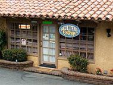
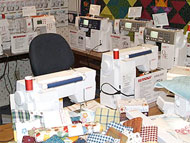
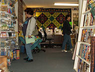

Address
Quilter's Cottage131 E. Fig St., Suite 6
Fallbrook, CA, 92028
Telephone
(760) 723-3060Hours
Mon, Tue, Thur, Fri, & Sat: 9:30 - 5Wed: 9:30-8:30
Sun: Closed
Website
www.myquilterscottage.com
Quilter's Cottage
Located in the quaint North County village of Fallbrook on the corner of Fig and Vine Street. A North County gem since 1990.
The shop carries top quality 100% Cottons and Flannel fabrics by well known designers. Shop for batting, sewing and quilting notions, quilt books patterns and fabric kits, also fun gift items.
A friendly smile and expert advise is always given. Classes for the beginning to advanced quilters are taught weekly.
Map & Directions
View Larger Map
- Home
- Prize Winners
- Webmaster
- © Southern California Quilters Run 2016-17